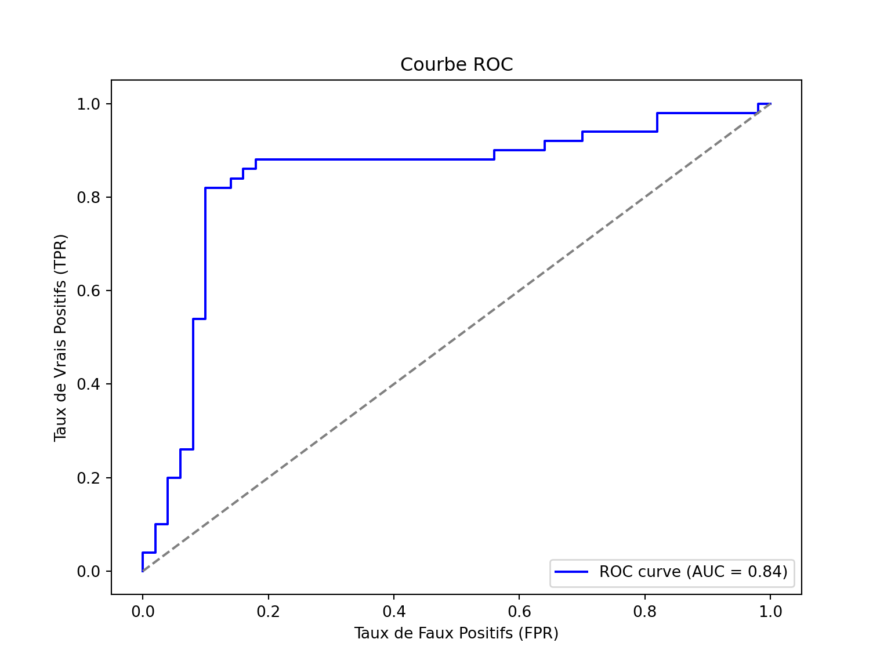

import numpy as np
import pandas as pd
np.random.seed(123)
n = 100
data = pd.DataFrame({
'true': ['chien'] * 50 + ['chat'] * 50,
'probs': np.concatenate([
np.random.uniform(0.5, 1, 50),
np.random.uniform(0, 0.5, 50)
])
})
data['pred'] = data['probs'].apply(lambda x: 'chien' if x > 0.5 else 'chat')
indices_erreurs = np.random.choice(n, 15, replace=False)
data.loc[indices_erreurs, 'probs'] = 1 - data.loc[indices_erreurs, 'probs']
data.loc[indices_erreurs, 'pred'] = data.loc[indices_erreurs, 'pred'].map({'chien': 'chat', 'chat': 'chien'})Exemple de données
Nous cherchons à identifier les résultats d’un modèle qui cherche à différencier des prédictions de chiens et de chats. Pour évaluer leur performance, des métriques adaptées permettent de mesurer à quel point un modèle est précis, fiable et équilibré dans ses prédictions.
set.seed(123)
n <- 100
data <- data.frame(
true = factor(c(rep("chien", 50), rep("chat", 50))),
probs = c(runif(50, 0.5, 1), runif(50, 0, 0.5))
)
data$pred <- factor(ifelse(data$probs > 0.5, "chien", "chat"))
indices_erreurs <- sample(1:n, 15)
data$probs[indices_erreurs] <- 1 - data$probs[indices_erreurs]
data$pred[indices_erreurs] <- ifelse(data$pred[indices_erreurs] == "chien", "chat", "chien") Metriques
Matrice de confusion
La matrice de confusion est une représentation en tableau des prédictions correctes et incorrectes :
\[ \begin{bmatrix} TP & FP \\ FN & TN \end{bmatrix} \]
- TP (True Positives) : Nombre de prédictions correctes pour la classe positive.
- FP (False Positives) : Nombre de prédictions incorrectes pour la classe positive.
- FN (False Negatives) : Nombre de prédictions incorrectes pour la classe négative.
- TN (True Negatives) : Nombre de prédictions correctes pour la classe négative.
from sklearn.metrics import confusion_matrix
import seaborn as sns
import matplotlib.pyplot as plt
conf_matrix = confusion_matrix(data['true'], data['pred'])
print("Matrice de confusion Python:")Matrice de confusion Python:print(conf_matrix)[[42 8]
[ 7 43]]plt.figure(figsize=(6, 4))
sns.heatmap(conf_matrix,
annot=True,
fmt='d',
xticklabels=['chat', 'chien'],
yticklabels=['chat', 'chien'])
plt.title('Matrice de confusion (Python)')
plt.xlabel('Valeur réelle')
plt.ylabel('Prédiction')
plt.show()library(ggplot2)
print("Matrice de confusion R:")[1] "Matrice de confusion R:"table(Prédit = data$pred, Réel = data$true) Réel
Prédit chat chien
chat 44 9
chien 6 41conf_matrix_r <- as.data.frame(table(data$pred, data$true))
names(conf_matrix_r) <- c("Prediction", "Real", "Count")
ggplot(conf_matrix_r,
aes(x = Real, y = Prediction, fill = Count)) +
geom_tile() +
geom_text(aes(label = Count)) +
scale_fill_gradient(low = "white", high = "steelblue") +
theme_minimal() +
labs(title = "Matrice de confusion (R)")Accuracy
L’Accuracy mesure la proportion de prédictions correctes parmi l’ensemble des prédictions.
\[ \text{Accuracy} = \frac{\text{Vrai Positifs} + \text{Vrai Négatifs}}{\text{Total}} \]
Avantages : Facile à comprendre et à interpréter. Représente bien la performance globale d’un modèle lorsque les classes sont équilibrées.
Inconvénients : Ne prend pas en compte le déséquilibre des classes. Un modèle peut avoir une haute accuracy même s’il classe mal les classes minoritaires.
from sklearn.metrics import accuracy_score
acc_sklearn = accuracy_score(data['true'], data['pred'])
print(f"Accuracy (sklearn): {acc_sklearn:.3f}")Accuracy (sklearn): 0.850acc_simple <- mean(data$pred == data$true)
print(paste("Accuracy (simple):", round(acc_simple, 3)))[1] "Accuracy (simple): 0.85"Précision
La précision est la proportion des prédictions positives correctes parmi toutes les prédictions positives.
Avantages : Utile lorsque l’on veut minimiser les faux positifs. Par exemple, dans des scénarios où une fausse alerte coûte cher (par exemple, détection de fraude).
Inconvénients : Ne prend pas en compte les faux négatifs, ce qui peut être problématique dans certains cas, par exemple, lorsque l’on souhaite éviter les faux négatifs.
\[ \text{Précision} = \frac{\text{Vrai Positifs}}{\text{Vrai Positifs} + \text{Faux Positifs}} \]
from sklearn.metrics import precision_score
precision_per_class = precision_score(
data['true'],
data['pred'],
average=None,
labels=['chat', 'chien']
)
print("Précision par classe (sklearn):")Précision par classe (sklearn):print(f"Chat: {precision_per_class[0]:.3f}")Chat: 0.857print(f"Chien: {precision_per_class[1]:.3f}")Chien: 0.843# Précision moyenne
precision_avg = precision_score(
data['true'],
data['pred'],
average='macro'
)
print(f"Précision moyenne: {precision_avg:.3f}")Précision moyenne: 0.850conf_matrix <- table(Prédit = data$pred, Réel = data$true)
precision_chat <- conf_matrix["chat","chat"] / sum(conf_matrix[,"chat"])
precision_chien <- conf_matrix["chien","chien"] / sum(conf_matrix[,"chien"])
print("\nPrécision par classe (manuel):")[1] "\nPrécision par classe (manuel):"print(paste("Chat:", round(precision_chat, 3)))[1] "Chat: 0.88"print(paste("Chien:", round(precision_chien, 3)))[1] "Chien: 0.82"precision_moy <- mean(c(precision_chat, precision_chien))
print(paste("Précision moyenne:", round(precision_moy, 3)))[1] "Précision moyenne: 0.85"Recall
Le Recall mesure la proportion des vrais positifs détectés parmi tous les réels positifs. Il est particulièrement important lorsqu’on veut minimiser les faux négatifs.
Avantages : Utile dans des contextes où il est crucial de capturer autant de cas positifs que possible (par exemple, dans les tests médicaux).
Inconvénients : Ignore les faux positifs, ce qui peut mener à une hausse des faux positifs dans certains cas.
\[ \text{Recall} = \frac{\text{Vrai Positifs}}{\text{Vrai Positifs} + \text{Faux Négatifs}} \]
from sklearn.metrics import recall_score
recall_per_class = recall_score(
data['true'],
data['pred'],
average=None,
labels=['chat', 'chien']
)
print("Recall par classe (sklearn):")Recall par classe (sklearn):print(f"Chat: {recall_per_class[0]:.3f}")Chat: 0.840print(f"Chien: {recall_per_class[1]:.3f}")Chien: 0.860# Recall moyen
recall_avg = recall_score(
data['true'],
data['pred'],
average='macro'
)
print(f"Recall moyen: {recall_avg:.3f}")Recall moyen: 0.850conf_matrix <- table(Prédit = data$pred, Réel = data$true)
recall_chat <- conf_matrix["chat","chat"] / sum(conf_matrix["chat",])
recall_chien <- conf_matrix["chien","chien"] / sum(conf_matrix["chien",])
print("\nRecall par classe (manuel):")[1] "\nRecall par classe (manuel):"print(paste("Chat:", round(recall_chat, 3)))[1] "Chat: 0.83"print(paste("Chien:", round(recall_chien, 3)))[1] "Chien: 0.872"# Recall moyen
recall_moy <- mean(c(recall_chat, recall_chien))
print(paste("Recall moyen:", round(recall_moy, 3)))[1] "Recall moyen: 0.851"F1-Score
Le F1-Score est la moyenne harmonique entre la précision et le recall, offrant ainsi un compromis entre les deux. C’est une mesure utile quand il faut équilibrer la précision et le recall
Avantages : Prend en compte à la fois les faux positifs et les faux négatifs. Utile pour les problèmes avec des classes déséquilibrées.
Inconvénients : Si l’un des deux (précision ou recall) est faible, l’F1-score sera également faible.
\[ \text{F1-Score} = 2 \times\frac{\text{Précision} \times \text{Recall}}{\text{Précision} + \text{Recall}} \]
from sklearn.metrics import f1_score
# F1-score par classe
f1_per_class = f1_score(
data['true'],
data['pred'],
average=None,
labels=['chat', 'chien']
)
print("F1-Score par classe (sklearn):")F1-Score par classe (sklearn):print(f"Chat: {f1_per_class[0]:.3f}")Chat: 0.848print(f"Chien: {f1_per_class[1]:.3f}")Chien: 0.851# F1-score moyen
f1_avg = f1_score(
data['true'],
data['pred'],
average='macro'
)
print(f"F1-Score moyen: {f1_avg:.3f}")F1-Score moyen: 0.850precision_chat <- conf_matrix["chat", "chat"] / sum(conf_matrix[, "chat"])
recall_chat <- conf_matrix["chat", "chat"] / sum(conf_matrix["chat", ])
f1_chat <- 2 * (precision_chat * recall_chat) / (precision_chat + recall_chat)
precision_chien <- conf_matrix["chien", "chien"] / sum(conf_matrix[, "chien"])
recall_chien <- conf_matrix["chien", "chien"] / sum(conf_matrix["chien", ])
f1_chien <- 2 * (precision_chien * recall_chien) / (precision_chien + recall_chien)
print("\nF1-Score par classe (manuel):")[1] "\nF1-Score par classe (manuel):"print(paste("Chat:", round(f1_chat, 3)))[1] "Chat: 0.854"print(paste("Chien:", round(f1_chien, 3)))[1] "Chien: 0.845"# F1-score moyen
f1_moy <- mean(c(f1_chat, f1_chien))
print(paste("F1-Score moyen:", round(f1_moy, 3)))[1] "F1-Score moyen: 0.85"ROC-AUC (Area Under the Curve)
La courbe ROC est utilisée pour visualiser la performance d’un modèle en fonction de ses seuils de classification. L’AUC mesure la capacité du modèle à distinguer entre les classes.
Avantages : Fonctionne bien avec des classes déséquilibrées et permet une comparaison entre modèles avec des seuils différents.
Inconvénients : Peut être difficile à interpréter dans des contextes très spécifiques.
\[ AUC = \int_0^1 \text{TPR}(fpr) \, dfpr \]
from sklearn.metrics import roc_auc_score, roc_curve
roc_auc = roc_auc_score(data['true'] == 'chien', data['probs'])
print(f"ROC-AUC: {roc_auc:.3f}")ROC-AUC: 0.841fpr, tpr, thresholds = roc_curve(data['true'] == 'chien', data['probs'])
plt.figure(figsize=(8, 6))
plt.plot(fpr, tpr, color='blue', label=f'ROC curve (AUC = {roc_auc:.2f})')
plt.plot([0, 1], [0, 1], color='gray', linestyle='--')
plt.xlabel('Taux de Faux Positifs (FPR)')
plt.ylabel('Taux de Vrais Positifs (TPR)')
plt.title('Courbe ROC')
plt.legend(loc='lower right')
plt.show()
library(pROC)Type 'citation("pROC")' for a citation.
Attaching package: 'pROC'The following objects are masked from 'package:stats':
cov, smooth, varroc_auc <- roc(data$true == "chien", data$probs)$aucSetting levels: control = FALSE, case = TRUESetting direction: controls < casesprint(sprintf("ROC-AUC: %.3f\n", roc_auc))[1] "ROC-AUC: 0.856\n"roc_curve <- roc(data$true == "chien", data$probs)Setting levels: control = FALSE, case = TRUE
Setting direction: controls < casesplot(roc_curve, main = "Courbe ROC", col = "blue")
legend("bottomright", legend = paste("AUC =", round(roc_auc, 2)), col = "blue", lty = 1)
Log Loss (Logarithmic Loss)
Le Log-Loss mesure la performance d’un modèle en termes de probabilité. Plus il est bas, meilleure est la qualité des probabilités assignées par le modèle.
Avantages : Prend en compte la confiance du modèle dans ses prédictions, ce qui est important pour évaluer les modèles qui prédisent des probabilités.
Inconvénients : Sensible aux prédictions incorrectes avec une forte confiance.
\[ \text{Log Loss} = - \frac{1}{N} \sum_{i=1}^{N} \left[ y_i \log(p_i) + (1 - y_i) \log(1 - p_i) \right] \]
from sklearn.metrics import log_loss
log_loss_value = log_loss(data['true'], np.vstack([1 - data['probs'], data['probs']]).T, labels=['chat', 'chien'])
print(f"Log-Loss: {log_loss_value:.3f}")Log-Loss: 0.520data$true_binary <- ifelse(data$true == "chien", 1, 0)
log_loss <- -mean(data$true_binary * log(data$probs) + (1 - data$true_binary) * log(1 - data$probs))
print(paste("Log Loss: ", round(log_loss, 4)))[1] "Log Loss: 0.4953"Matthews Correlation Coefficient (MCC)
Le MCC mesure la corrélation entre les prédictions et les résultats réels, en prenant en compte les vrais positifs, faux positifs, vrais négatifs et faux négatifs. C’est une métrique particulièrement utile pour les classes déséquilibrées.
Avantages : Représente un bon compromis global entre toutes les erreurs possibles (faux positifs, faux négatifs, vrais positifs, vrais négatifs).
Inconvénients : Plus difficile à interpréter que d’autres métriques comme l’accuracy ou le F1-score.
\[ MCC = \frac{TP \times TN - FP \times FN}{\sqrt{(TP + FP)(TP + FN)(TN + FP)(TN + FN)}} \]
from sklearn.metrics import matthews_corrcoef
mcc_value = matthews_corrcoef(data['true'], data['pred'])
print(f"Matthews Correlation Coefficient (MCC): {mcc_value:.3f}")Matthews Correlation Coefficient (MCC): 0.700library(mltools)
mcc_value <- mcc(data$pred, data$true)
print(sprintf("Matthews Correlation Coefficient (MCC): %.3f\n", mcc_value))[1] "Matthews Correlation Coefficient (MCC): 0.701\n"